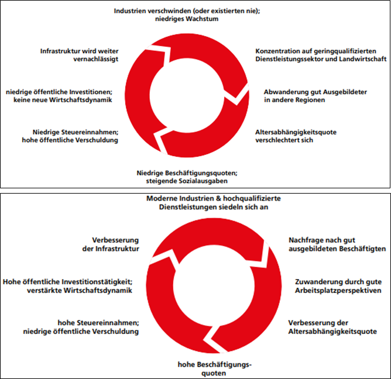

Regionales Pro-Kopf-Einkommen in der EU in % des EU-Durchschnitts (2018)
M2
Ursachen
Zeichne mit der Maus.

Teufelskreis peripherer Regionen (oben) und positiver Zyklus in wirtschaftlich entwickelten Zentren (unten)
Aufgaben
1. Beschreibe das Wohlstandsgefälle innerhalb der EU. (Abb. 1)2. Analysiere den Zusammenhang zw. Wirtschaftskraft und Bevölkerungsdichte. (Abb. 1; Diercke-Atlas, S.102-1)3. Beurteile, in welchen Ländern die Disparitäten besonders klein, in welchen sehr groß sind. (Abb. 1)4. Diskutiere, inwieweit die EU geeignet ist und welche Möglichkeiten sie hat, Disparitäten auszugleichen. (Haack-Atlas, S.109-1)5. Der sog. Matthäus-Effekt besagt, „die Reichen können nur reicher, die Armen nur ärmer werden“. Beurteile, inwieweit dies für (geograph.) Regionen gilt und wie EU-Maßnahmen dem entgegenwirken können. (Abb. 2 + 3)6. Beurteile, ob in der EU eine Verringerung der Disparitäten stattgefunden hat. (Diercke-Atlas, S.100-2)7. Diskutiere, inwieweit die Disparitäten zu einer ungerechten Politik in der EU beitragen und die Demokratie gefährden können.